Guide for contributing to MvcContrib using git.
Install git by downloading the latest msysGit installer from http://code.google.com/p/msysgit
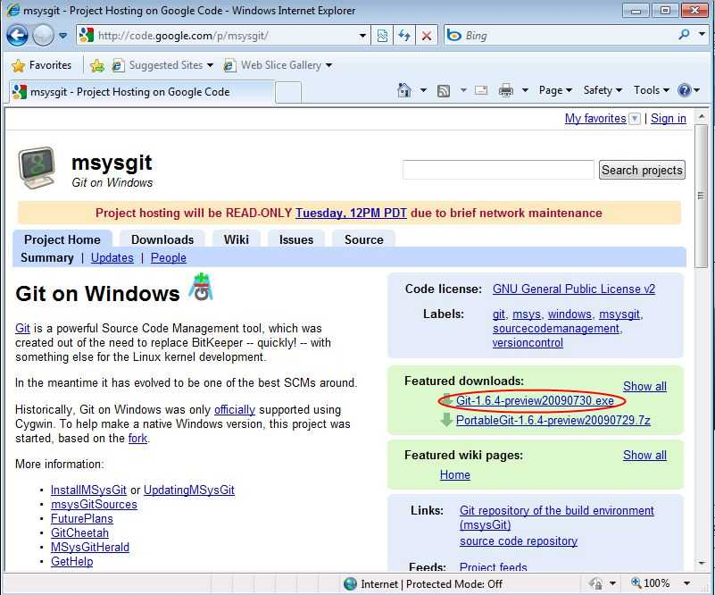
Once downloaded, run the installer and proceed through the wizard until you are asked to adjust your PATH environment:
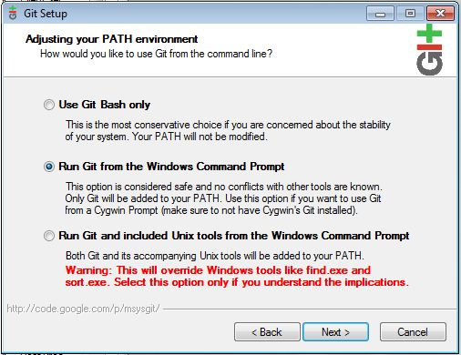
The default setting is to "use Git Bash only" which means you will only be able to use git commands from within the Bash shell. Personally, I also like to run the git commands from inside a windows command prompt or a PowerShell window, so I choose the second option "Run git from within the Windows Command prompt."
Next, you will be asked which SSH client you wish to use. Choose 'OpenSSH' unless you have a particular need to use putty/plink:
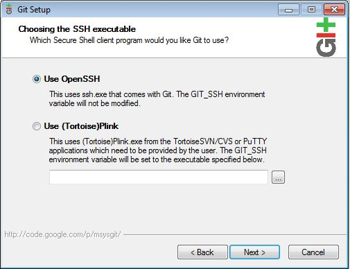
The next stage is to choose your line endings. Choose 'Use Windows style line endings'.
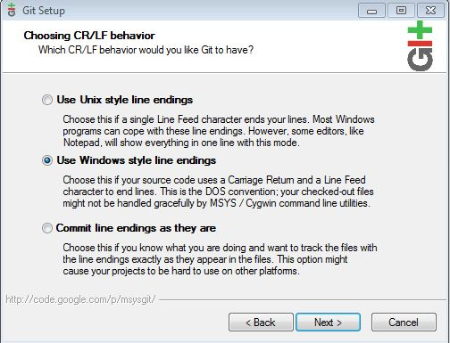
Pressing 'Next' will install msysGit to your system.
Now that msysGit is installed, you will need to generate SSH keys in order to commit code to GitHub.
First, open "Git GUI" from the Start menu:
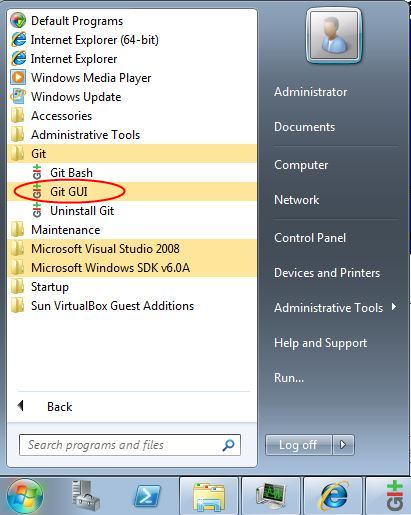
From the "Help" menu select "Show SSH Key":
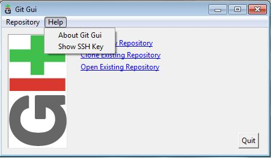
Next, click the "Generate Key" button:
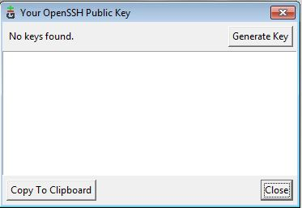
This will generate your public and private OpenSSH keys. You will be prompted to enter an optional passphrase. If you do not leave this blank, then you will be prompted to enter the password each time you try to push to github. For this reason, I usually leave it blank.
Once generated, Git GUI will store your private and public keys in your %USERPROFILE%/.ssh directory. You may wish to back up these keys to somewhere secure. Git GUI will now display your public key. Copy this to your clipboard as you will need it when signing up to github.
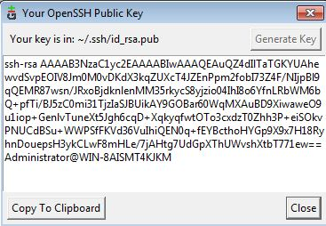
You should also tell git your email address and name by opening a command prompt and typing the following commands:
git config --global user.name "Your name" git config --global user.email your@emailaddress.com
Note: You do not have to sign up to GitHub if all you want to do is download and compile the source. If this is all you need to do, then feel free to skip this step and read building from source.
On the GitHub sign up page you'll need to enter your username, email address, password and the SSH Key that you generated in the previous step.
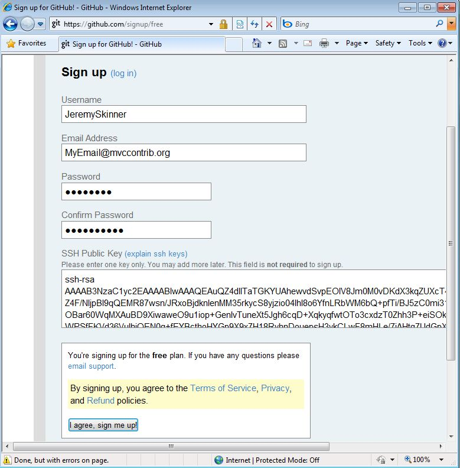
Note: This step is only useful if you want to get the source, but have no intention of contributing. If you wish to contribute a patch please read the section on using a fork to contribute a patch.
GitHub automatically publishes the latest source code as either a .zip or a .tar.gz file. To download it, visit the MvcContrib project page and click the download button:
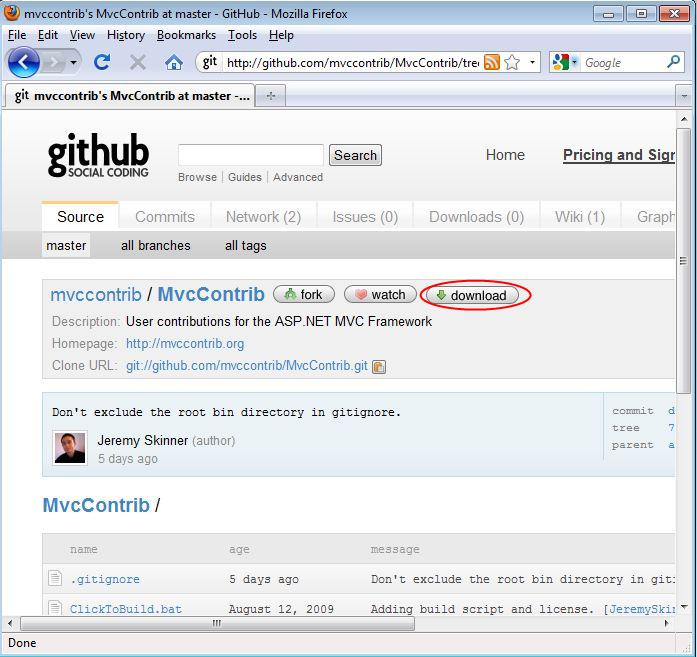
Clone the repository locally by opening a command window, going into your projects directory and typing:
git clone git://github.com/mvccontrib/MvcContrib.git
This create a local git repository and fetch the mvccontrib source code.
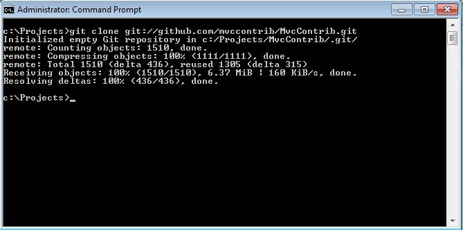
Once checked out, you can cd into the MvcContrib directory and run the build script:

If you wish to contribute a patch to MvcContrib you will need to fork the MvcContrib repository. You can do this by logging into GitHub, going to the MvcContrib project page and clicking on the fork button.
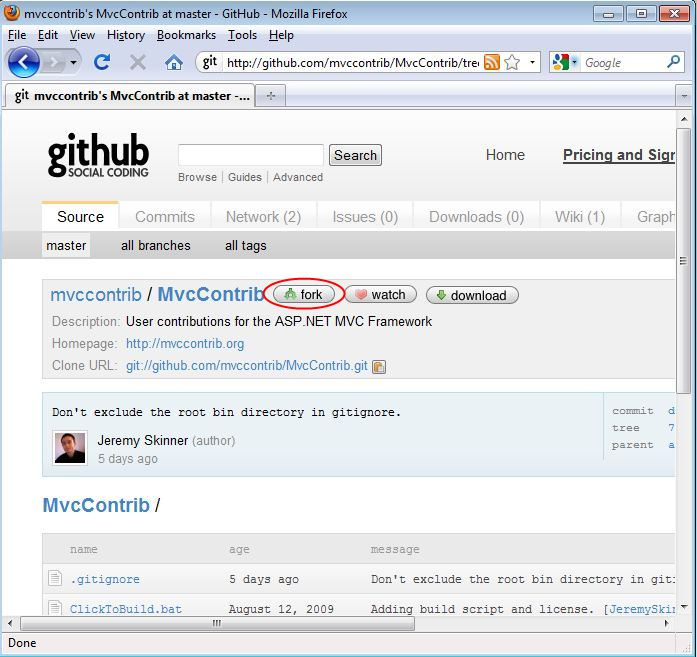
This will copy the MvcContrib repository to your own user account. You can then clone this repository locally (not the original repository) using the "Your clone URL" via ssh:
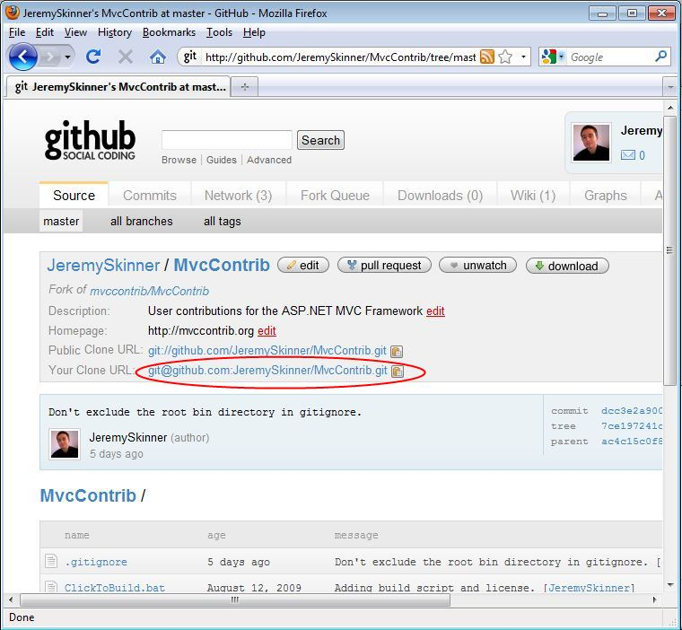
You can clone your fork locally by typing:
git clone git@github.com:YourUsername/MvcContrib.git
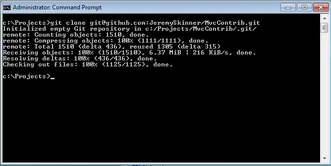
You will automatically be authenticated to GitHub using the private key that you have already generated.
Note: If this is the first time you have cloned from github using SSH, you will receive the following message:
The authenticity of host 'github.com' can't be established. RSA key fingerprint is 16:27:ac:a5:76:28:2d:36:63:1b:56:4d:eb:df:a6:48. Are you sure you wish to continue connecting (yes/no)?
If you receive this message you must type "yes" (not just "y").
At this point, you can now edit the source code. Once you have made your changes, you can type git status to see the list of uncommitted changes:
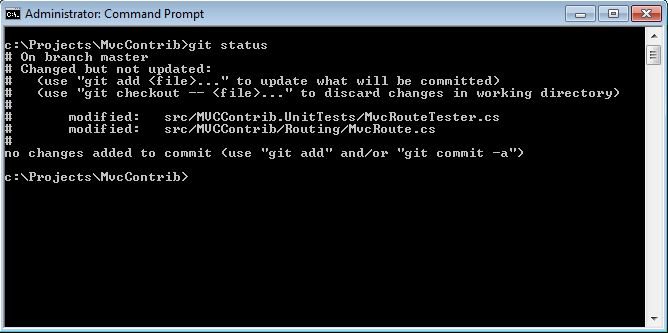
To commit these changes you will first need to stage them. You can either do this by adding each individual file to the index (git add path\to\changed\file) or by adding all changes by typing git add -A. After doing this, typing git status again will show you the changes that will be committed:
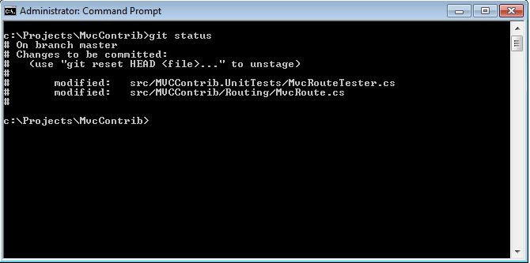
At this point, you can commit your changes by typing git commit. If you haven't set up an EDITOR environment variable yet, you will receive the following message:
error: Terminal is dumb but no VISUAL nor EDITOR defined. Please supply the message using either -m or -F option.
To work around this, add an environment variable to your system called EDITOR the value of which should be the path to your favourite text editor (in my case, c:\downloads\notepad2.exe).
Now typing git commit will open the COMMIT_EDITMSG file in your text editor and will show you the changes that will be committed. Lines prefixed with a # are comments and will not appear in the commit message.
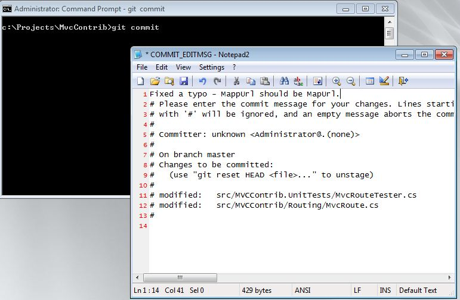
Once you have saved the file and closed your editor, the changes will be committed to your local repository.
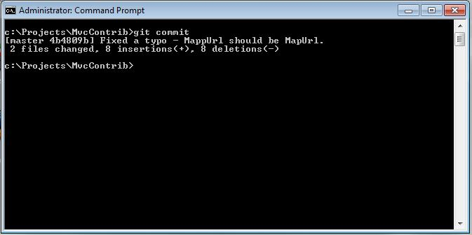
Now you can push these changes back to your forked repository on github by using the following command:
git push origin master
"origin" is the name of the remote repository that you want to push to (git automatically added your github fork as a remote repository named 'origin' when you created your local clone) and "master" is the name of the branch.
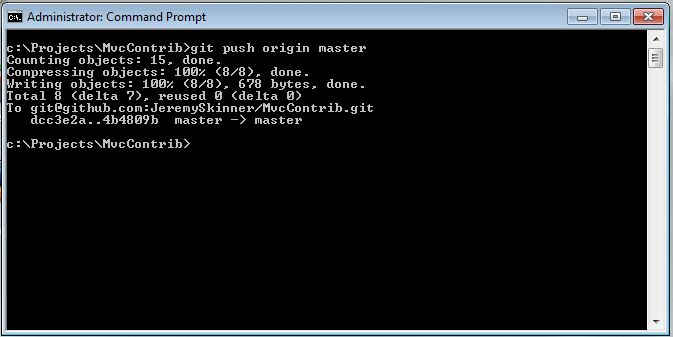
If you visit your cloned repository page on GitHub, you'll now see your new commit:

Now that you have committed your changes and pushed them back up to GitHub, you need to inform one of the MvcContrib committers so that they can merge your changes into the main repository. This can be done by clicking the Pull Requst button on your forked repository page.
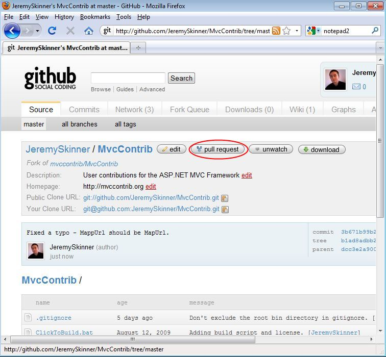
This will display a form where you can enter a message about what your changes include and allows you to choose who should receive your messages.
Anyone who has forked the MvcContrib repository will appear in this list but you should only tick the "mvccontrib" box. This will send an email to the MvcContrib-Developers mailing list and all the committers will be immediately notified.
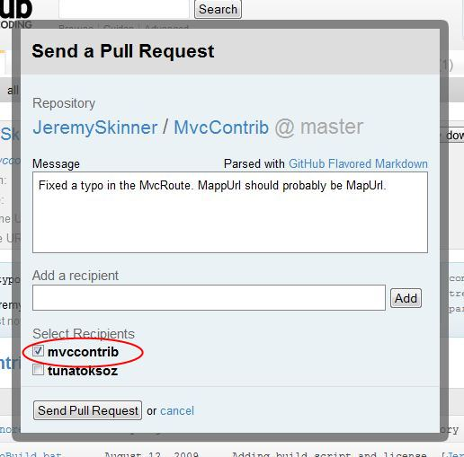
That's it! Your patch will now be reviewed by one of the MvcContrib committers. If the reviewer has any questions about your patch then they may send you a message to your GitHub inbox.
Any questions should be directed to the MvcContrib mailing list at mvccontrib-discuss@googlegroups.com.